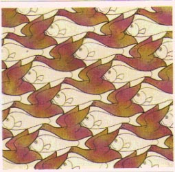
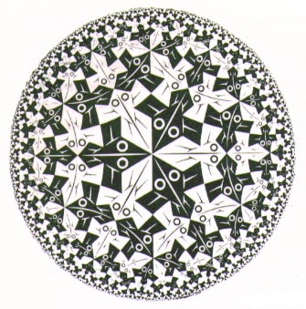
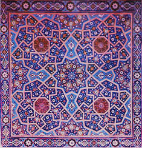
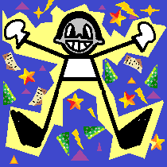
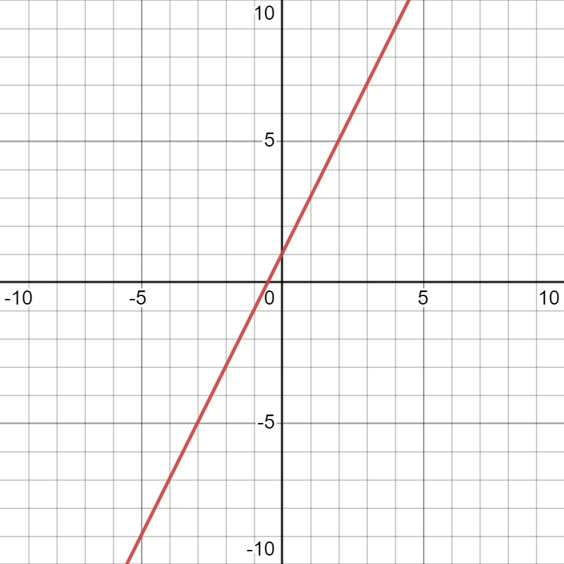
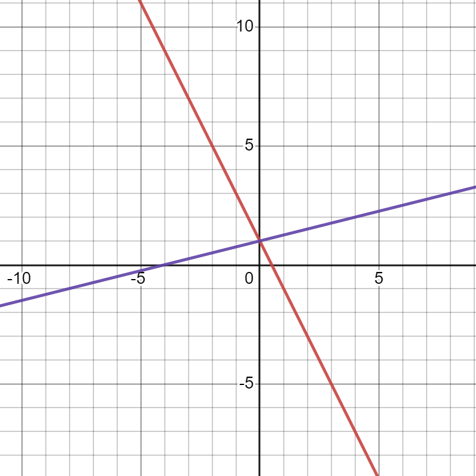
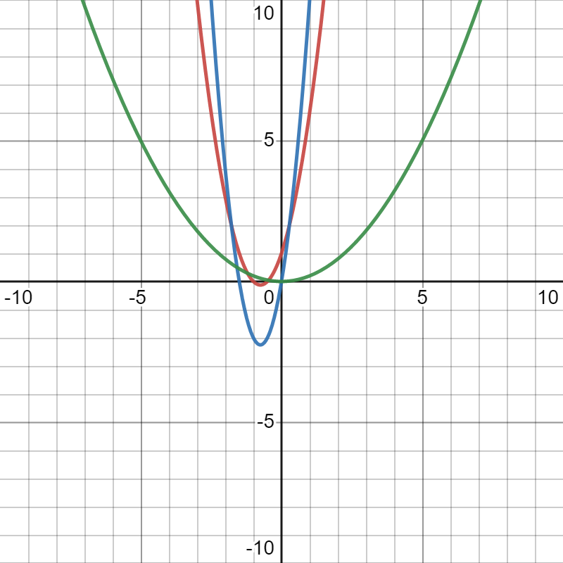
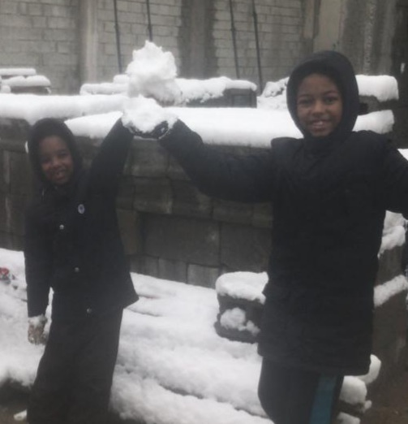

Blogspage
This, my friends, is where I write up all of my blogs. Come and read every
once in a while. I post up new stuff every Thursday or so. Interesting stuff, I
promise!
Tags marked blue are for events, tags marked green are for thoughts, and
tags marked black are for undefined miscellanious
things. Dates are placed right next to the title.
Tesselations and the wonder of mathematical art
4/8/2022

While researching for a topic for this blog, I expected to come across
something along the lines of algebra or calculus too complex for me to
understand (Refer to my "Cool Graphs" blog). Instead of that, I found
something that piqued my interest greatly, both mathematically and
artistically. A tessellation is a shape or combination of shapes that
cover a plane without any gaps or overlaps.
Tessellation, the word, comes from the latin word 'tessera,' which means
small stone or cube. These tessera were used to make 'tesselata,' which
are the tilings on the walls and ceilings of Roman buildings.

Tessellations emphasize a very certain mathematical concept, that of which
is symmetry. The Dutch graphic artist, Maurits Cornelis Escher, defined
IV types of symmetry: translation, reflection, rotation, and glide
reflection. Translation, as many of my 6th grade mathematics classes have
told me, is the symmetry involving the drawing of a shape on a plane in
two different places on said plane. Reflection, is the reflection of a shape
over an axis or angle that creates a copy of that shape in the altered
alignment of the original on said axis or angle. Rotation is the symmetry
where a shape is repeated and rotated around one immovable point. Glide
rotation is a combination of translation and reflection where a shape is
both translated and reflected on a plane.

There are many variations of tessellations involving, pentominoes,
tesselations within the limits of a circle, tesselations with a 3 dimensional
effect, tesselations with figures in place of shapes, and much more.
Tessellations are great, and they really show how much art and the sciences
can have in common. Both revolve around pattern, order, and stability. I can
see why they are used so commonly in tiling! The thing about these, is that
they can only be caged into numbers for so long before things become
overcomplicated and unintelligible to a regular person. This, in my opinion
is what separates them from anything on geometry's side.
Now, with all of this information on tessellations and the whatnot, I felt
obliged to create one of my own. Ladies and gentlemen, please be welcomed to
my tessellation of my own creation, the Wealthy Man's Carpet.
I hope you liked today's blog, if you'd like to see more of this, feel free to read some more information from the sources I've listed,
And remember, To you I say hello and maybe even goodbye.
The school year has ended!
24/6/2022

THE YEAR HAS ENDED BABY!!!!!!!!
I never thought this day would come, but it has, and happily so! After the grueling
final exams, I am able to return to my website, and continue what had been left alone
for so long.
An excuse for the unexpected leave of uploads; I had exams of course, and that's serious
business! I am now out of the routinely hellhole of school, so no worries for 2 months. Just
report card day(could decide the fate of my life), and graduation day(awesome!).
Ive receently been speedcubing and playing more chess and am slowly improving at both
of those. My writing has returned and I plan to make a schedule for my day to day life in
the summer(no strict times, I can wake up whenever I want). I know most of my classmates
plan to either play videogames all day, travel, or hibernate through the two months just
to return with the worst sleep schedules. Most of the next few blogs will be about my other
hobbies.
Happy summers, and remember; To you I say hello, and maybe even goodbye.
Cool graphs I think are interesting!
26/5/2022
As of recently, I hve been looking into the wonders of graphing. I found a
few graphs that I think are pretty interesting. So let's look at some
interesting graphs, shall we!
First up is the Linear equation in Slope-Intercept form. It has a pretty
analytical name, which does highlight how definite and simple the real thing is.
The equation goes as follows:
y=mx+b
This shows what I mean by a 'definite and simple' graph and equation. Take a look
at the graph.

The linear graph in slope-intercept form. m=2 b=1.
The interesting thing about this is that m makes x look like its going
The graph itself has dodged the origin point because of the unnessecary addition of b. This, while pretty
annoying for an equation, allows the line to not only cross through quadrants I and III, but also II. Now,
what if we want it to cross through the opposite quadrants? What if we made m<0?

Red line: m=-2 b=1. Purple line: m=
Now this is what happens when you make m a negative number. It crosses through the opposite quadrants.
The purle line added shows what would happen if you made m a fraction. This makes the illusion go the
opposite way. x is now going 4 times more than y! That's all that can be explored because of the simplicity,
but I can see myself using these to graph a rate of some sort (e.g. ciggarettes smoked/year) mostly because of
its compatibility with ratios and whatnot.
Now for the real deal, the quadratic equation! This one was a little bit tricky to understand, mainly because
of the polynomial nature of this equation, but in the end it does show a really cool graph. Here's
the equation I've been talking about so much.
y=ax2+bx+c
Notice the coefficients, constants, and overall complexity of this thing. This is all a little too over my level
because of how I am a 6th grader. But let's leave that behind and get to the core of this quadratic equation.

The Quadratic equation in three examples.
The shape above that is made is a parabola! That is a curve that I never thought I'd see.
Anyways, let's move on now. The red line is the one I factored completely. In it, I made a=2 b=3 and c=1. It is
the usual parabola, but I did think it was a bit narrow so I changed a few things in the other parabolas.
In the green one, I decided to see what would happen if coefficient bx and constant c were to be removed. Surprisingly, it
positioned the vertex of the parabola at the origin point! Then I made a=
The blue one was where I really experinmented with everything else. In it I made c=0 because it really seemed unnessecary
of an addition. Then I made a=4 and b=6, which showed me what b did. B controlled the length of the parabola. I even
experimented with making b negative, which showed expected results by flipping the parabola horisontally.
That was a real deep look into the graphs that I researched. Remember though, this won't be the last time I talk about
cool and interesting graphs!
My awaited return!
17/5/2022
I bet you have slothed on this little forgotten project of a place.
DON'T BLAME ME!!!
I didn't have any tim for this thing as the pile of homework and worksheets that I had to do left me absolutely none time to maintain this hellsheet of a website.I did do some meaningful stuff in the chaos of school after exam season. I recently finished an 8 page comic book with pencil drawings called "PUFFBALL & CHICKEN LEGS." It was the first volume of an intended series, that of which I submitted to the library so that it could be under the public domain. Turns out, putting yourwork under the public domain, which most of the time does not care about the author nor value their work, is like creating the most attention catching neon light text that spoke "KICK ME!" I thought that somebody just had rented the book for themselves, but now it just feels like somebody threw it in the paper shredder never to be seen again. If I ever get hold of that comic, I am never going to put it in the library under public domain EVER again, and I would also post it online here for you! => Though, I am finally on and back on Stephensworld! I will return to my progress on Crow Kid, and post here very Tuesday, no
THURSDAY.
Yup, I've decided that Tuesday was too much a tiresome day for posting, and most of all it was in the midst of the week. Tuesday is strategically too bad for blogs. Thans, you deserve a lengthy blog for your paience that lasts two months and a few weeks. To you I say hello, and maybe even goodbye!A little thing I got to say.
21/3/2022Concerning my inactivity for such a long time... someguyshutup5@gmail.com The new email is a bit janky, so contact me with this until further notice. Sorry fellas! :/
My philosophy of life and death. 8/2/2022
Hello, steffy back! Sorry I didn't get to upload something meaninful in a long time but surely now this could suffice.
Recently I've been reading Skellig, by David Almond. Yes yes, say whatever, it's a childrens book, but
I do know that it was a good read. Very good indeed! The book talked of a man left in a dirty garage to a kid with
a struggling baby sister, and so the kid and his neighbor go together to save the man, and he gives them wings and disappears.
It's given me some thoughts on where the man himself went, which leads me to think really much about life and death.
This brings me to my newfound philosophy, other than the old one, which relied on just thinking there's life after death.
I believe that life is a cycle, one not much are usual with, but still a cycle. You are born and you die, and from there, a
worry shouldn't come up for you are already dead. This is a knob-ended cycle, but it branches to make new and beautiful lives. This knowledge
that past death, you can do absolutely nothing
brings more meaning to your life. Once you know that what can be done can only be done now, with no buts
and if and maybes', that is where you truly live life to the fullest of enjoyment and peace.
One also can't just know that, they must also be content and accept that fact.
After death, you are not remembered. What you do is remembered. If you do not do something, your name will be wiped off the face
of the earth. If somebody wants their name to be remembered, they must do something important, something people can remember them by.
I'm not saying you have to do it, it's just if you want to be remembered. If you'd like that, do something you wanted to do and one
that people can know you by.
A favourite quote of mine is the following one that puts this into short words.
"Some live to eat, and others eat to live."
--Confucius
The ones who "live to eat" think life is all about survival, and do not care for the actual contentment of living. Those who eat to live know what life actually is, an experience of great and awful things and not a period of time in between you are locked in a body of meat and bones. That, my friends, concludes my blog today. I hope you ejoyed reading this. Real life issues like homework are in thw way, so I'll see you and remember that to you I say hello, and maybe even goodbye.
Got a cool idea for a story, whaddayathink? 31/1/2022
So I've recently got this idea for a whole story about squirrels and ravens fighting for a forest. Decided
I could write up something along the lines of that. If you've got a thought on this, I could flesh the idea out.
The story here starts out with the setting. There are two islands, the good guys island and the bad guys island. The
forest is the one with the larger area, is on the good guys island, and it has been fully inhabited
by all types of animals, nice and exotic types aswell. This one is basically never visited to by a human.
The other one, is the wasted land, is located on the bad guys island, and is wasted out by humans but one thing we
know is that the ravens and sparrows live there. Only that, and then the entire climax happens.
One day a raven sets out to visit the world beyond their deaded out island(its about time they did). When this raven
comes back he tells them of the land and they soon over time build a relationship with them. But the sparrows and ravens
decide to take out the land for themselves,(dumb idea, youll see why) and start a war with them.
The war goes on and on and on, until the final battle where they are about to kill out the king of that forest land. And
then from there we lose the forest years after but in the end something happens.
The crows lose out their land and after all that squabbling and ribaldry they realise they doomed themselves.
This represents the idea of what ignorance and despair brings you, even more problems if not tackled well. I think this story
can teach that you should always think about what you do before doing it. That you shouldn't make impulsive decisions.
Anyways, thanks for tuning in on this little thought blog. To you I am Stephen P. Hurlsmith, and I say hello, and maybe even
goodbye.
Did some more research on snow solidifying. 25/1/2022
As the snowstorm week reaches its halt and spring arrives, I got some info on what was going on.
Turns out, that solid fragile rock-like snow is called heavy snow, and it usually is defined
as "snow that piles up to 2.032 decimeters in a day or less." And this snow was sure heavy. I'd
estimate around 1 decimeter on the first few days and 3 decimeters by the climax of this snow storm lasting a week.
Not to mention that the temperatures would go up to -15 degrees centigrade at the maximum. So this sure
was cold.
The events of the snow storm were a bit limiting. Our water supply froze, so for 4 days we had to
use bottled up water in tanks and our dishes and utensils piled up. Only today, as of writing,
has the water melted and reached our sink. To make matters even worse, for a short period of time between
friday and sunday our kerosene heater didn't work out. In Saturday, I tried playing out in the snow but
it was so cold outside that I couldnt feel my hand for 10 minutes and after, it became tiring to hold a pencil.
But all is well and fine now, the sun is reaching out and the snow is melting out now so there are no worries.
Though, this reminds me that there was an event a little similar to this(though more extreme) that
I could be talking about. The 1972 Iran Blizzard. Well, see you next tuesday, I'll probably be talking about it.
Snow reaching! Yippee or Oh no? 18/1/2022
A few days ago snow started to lighten up the whole place. It's a real refreshment
from the annual blaze of sun so hot it would tan anyone that stood under it for more than 30
SECONDS.
At first the snow was as regular as anything really. Me and my brothers got to wrap ourselves up and build
a crude sowman out of chunks of snow we found scattered across our neighborhood. It's more of a low budget
column than a real snowman with details but thst really doesn't matter. Not to mention I literally could not
feel my hands after I went out! Real problem honestly, but the laws of the universe will always freeze my
fingers off when it snows so it's better not to complain.

An image of me and my brother from Sunday.(I'm the taller one hehe)
The next day I woke up to realising that the whole thing had collapsed down overnight! But that's not the point,
the snow actually started to gather up and solidify. So it became snow but with the texture of a fragile rock. That's
really weird but I'll have to check it out for myself sometime.
Today the whole thing gets more and more strong, the air started to get midly harder to breathe in, as in fog takes up a good
chunk of the breathed air so it's like inhaling water but with a bit of air. Fog became so strong it could turn you blind.
Whatever it is, news predicts this unnatural cold will go on until the 25th! =O That's like alot of time for if you live where I live.
But luckily I got a break from school which really did help alot! They owe me a break after what I did.
That's all I really have to say for today really.